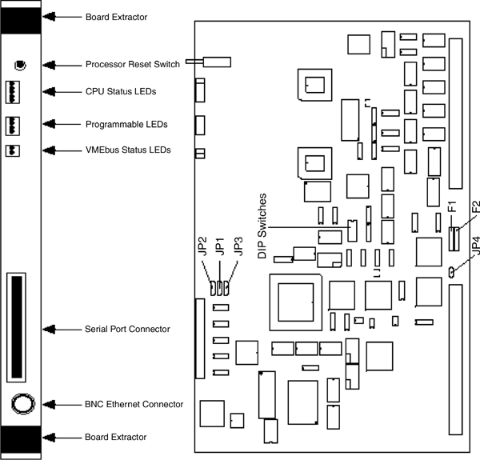

Operating Documentation
Direction 5114045-800, Rev# 10
LightSpeed 4.X Service Information (Advanced)
Operating Documentation |
See Illustration 1 for the following discussion of the ETC, STC, and OBC boards.
Illustration 1: ETC, STC, & OBC CPU (Artesyn) Board Layout

Table 1: ETC, STC, & OBC CPU (Artesyn III) Board Jumper Settings
| JUMPER | FUNCTION | GE CONFIGURATION | COMMENTS |
|---|---|---|---|
| JP1 | Port A RI/DCD | J1:1-2 | |
| JP2 | Port B RI/DCD | J2:2-3 | |
| JP3 | RS-232 Handshaking | J3:1-2 | |
| JP4 | Watchdog Enable | removed | Watchdog Disable |
See board ( Illustration 1).
Table 2: ETC CPU (Artesyn III) Board DIP Switch Settings
| SWITCH NUMBER | CONFIGURATION | FUNCTION | COMMENTS | |
|---|---|---|---|---|
| 1 | OFF | OPEN | ETC node | Selects board for ETC Chassis |
| 2 | OFF | OPEN | ETC node | Selects board for ETC Chassis |
| 3 | OFF | OPEN | Primary Nodes | selects primary nodes |
| 4 | OFF | OPEN | n/a | Not applicable |
| 5 | ON | CLOSED | nbsClient view | View logs via nbsClient/LAN |
| 6 | OFF | OPEN | n/a | Not applicable |
| 7 | ON | CLOSED | EPROM Boot | Power-Up view EPROM Boot |
| 8 | OFF | OPEN | Test Disable | Self Test Mode disabled |
Table 3: STC CPU (Artesyn III) Board DIP Switch Settings
| SWITCH NUMBER | CONFIGURATION | FUNCTION | COMMENTS | |
|---|---|---|---|---|
| 1 | ON | CLOSED | STC node | Selects board for STC Chassis |
| 2 | ON | CLOSED | STC node | Selects board for STC Chassis |
| 3 | OFF | OPEN | Primary Nodes | selects primary nodes |
| 4 | OFF | OPEN | n/a | Not applicable |
| 5 | ON | CLOSED | nbsClient view | View logs via nbsClient/LAN |
| 6 | OFF | OPEN | n/a | Not applicable |
| 7 | ON | CLOSED | EPROM Boot | Power-Up view EPROM Boot |
| 8 | OFF | OPEN | Test Disable | Self Test Mode disabled |
Table 4: OBC CPU (Artesyn III) Board DIP Switch Settings
| SWITCH NUMBER | CONFIGURATION | FUNCTION | COMMENTS | |
|---|---|---|---|---|
| 1 | OFF | OPEN | OBC node | Selects board for OBC Chassis |
| 2 | ON | CLOSED | OBC node | Selects board for OBC Chassis |
| 3 | OFF | OPEN | Primary Nodes | selects primary nodes |
| 4 | OFF | OPEN | n/a | Not applicable |
| 5 | ON | CLOSED | nbsClient view | View logs via nbsClient/LAN |
| 6 | OFF | OPEN | n/a | Not applicable |
| 7 | ON | CLOSED | EPROM Boot | Power-Up view EPROM Boot |
| 8 | OFF | OPEN | Test Disable | Self Test Mode disabled |